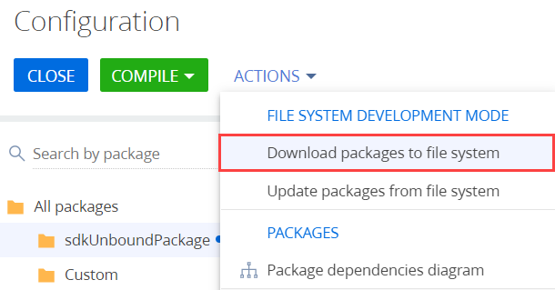
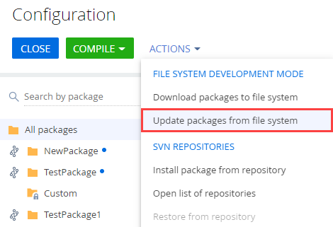

Эта статья о том, как начать работу с Git в Creatio. Вначале изучим основы Git, затем перейдем к особенностям использования Git в Creatio и настройке Git. В конце статьи вы уже будете знать, что такое Git и почему им следует пользоваться, а также получите окончательно настроенную для работы систему.
Git — распределенная система управления версиями. Основное отличие Git от других систем контроля версий — это подход к работе с данными. Подход Git к хранению данных похож на набор снимков файловой системы. Каждый раз, когда вы делаете коммит, то есть сохраняете состояние своего проекта в Git, система запоминает, как выглядит каждый файл в этот момент, и сохраняет ссылку на этот снимок. Если файлы не были изменены, то Git не запоминает эти файлы еще раз, а создает ссылку на предыдущую версию идентичного сохраненного файла. Git представляет данные как поток снимков. Большинство других систем (CVS, Subversion, Perforce, Bazaar и т. д.) хранят информацию в виде набора файлов и перечня изменений в файлах по времени (обычно это называют контролем версий, основанным на различиях).
Состояния файлов в Git:
- Зафиксированное (committed) — файл уже сохранен в локальной базе.
- Измененное (modified) — файл был изменен, но еще не зафиксирован в локальной базе.
- Подготовленное (staged) — файл был изменен и отмечен для включения в следующий коммит.
Инструкция по установке и работе с системой контроля версий Git содержится в официальной документации Git.
Для работы можно использовать различные GUI, предоставляющие удобный интерфейс для работы с Git, например Sourcetree.
Особенности работы с Git в Creatio
Creatio IDE предоставляет инструменты для работы с системой контроля версий Subversion. При включенном режиме разработки в файловой системе встроенный механизм интеграции с системой контроля версий отключен. Это позволяет использовать любую систему контроля версий. Мы рекомендуем использовать Git.
Система контроля версий Git рекомендуется к использованию для:
- Приложений, в которых разработка ведется в файловой системе.
- On-site приложений.
Для cloud-приложений рекомендуется использовать SVN. Работа с системой контроля версий SVN описана в статье Контроль версий в Subversion.
Система контроля версий Git рекомендуема к использованию для on-site приложений Creatio.
Общая последовательность работы в Git
1. Создать пакет
- Перейдите в дизайнер системы Creatio по кнопке
 .
. - В блоке Конфигурирование разработчиком (Admin area) перейдите по ссылке Управление конфигурацией (Advanced settings).
- В области работы с пакетами нажмите кнопку
 .
. - Заполните свойства пакета:
- Название (Name) — "sdkPackageInFileSystem".
Пакет создайте без привязки к хранилищу.
- Нажмите кнопку Создать и добавить зависимости (Create and add dependencies) и установите зависимости пакета.
- В пользовательском пакете создайте конфигурационные элементы. Конфигурационные элементы подробно описаны в статье Разработка конфигурационных элементов.
2. Выгрузить пакет в файловую систему
- Настройте Creatio для работы в файловой системе. Настройка описана в статье Внешние IDE.
- На панели инструментов в группе действий Разработка в файловой системе (File system development mode) выберите Выгрузить все пакеты в файловую систему (Download packages to file system).

В результате все пакеты будут выгружены по пути ..\Terrasoft.WebApp\Terrasoft.Configuration\Pkg в каталог с соответствующим названием пакета.
3. Добавить исходный код
Для работы с исходным кодом клиентских или серверных схем используйте внешнюю IDE.
4. Зафиксировать изменения в хранилище Git
- Нажмите Stage All и выберите файлы, которые необходимо зафиксировать.
- Нажмите Pull и выгрузите изменения из глобального хранилища, сделанные другими пользователями.
- Нажмите Commit и зафиксируйте изменения в локальном хранилище.
- Нажмите Push и зафиксируйте изменения в глобальном хранилище.
5. Установить пакет в приложение
- Перейдите в дизайнер системы Creatio по кнопке .
- В блоке Конфигурирование разработчиком (Admin area) перейдите по ссылке Управление конфигурацией (Advanced settings).
- На панели инструментов в группе действий Разработка в файловой системе (File system development mode) выберите Обновить пакеты из файловой системы (Update packages from file system).

В результате пакет будет добавлен в приложение.
6. Выполнить генерацию исходных кодов
Чтобы выполнить генерацию исходных кодов, на панели инструментов Creatio в группе действий Исходный код (Source code) выберите Сгенерировать для требующих генерации (Generate where it is needed).
7. Скомпилировать изменения
Чтобы скомпилировать изменения, на панели инструментов Creatio нажмите Компилировать (Compile).

Необходимость обновления структуры базы данных, установки SQL-скриптов и привязанных данных отображается в колонке Статус (Status) рабочей области раздела Конфигурация (Configuration).
8. Обновить структуру базы данных
Чтобы обновить структуру базы данных, на панели инструментов Creatio в группе действий Актуализировать элементы (Actualize items) выберите Обновить структуру БД для требующих обновления (Update DB structure where it is needed).

9. Установить SQL-сценарии и привязанные данные (опционально)
Если пакет содержит привязанные SQL-сценарии или данные, то необходимо выполнить соответствующие действия для их выполнения или установки.
После установки в приложении станет доступной реализованная в пакете функциональность.
Для отображения примененных изменений может понадобиться обновление страницы с очисткой кэша.